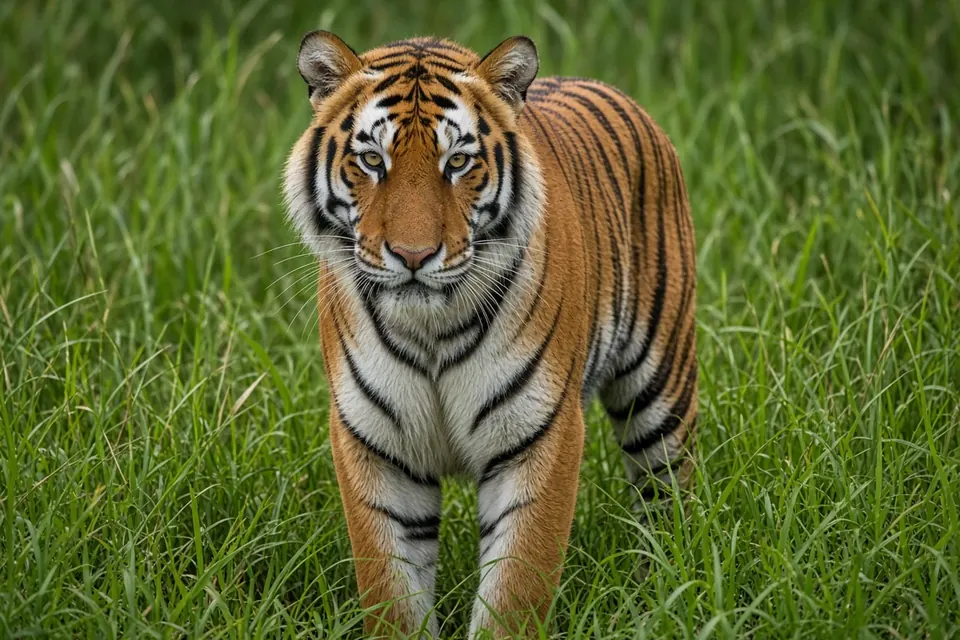

Home › Blog › Never enter a tiger enclosure: lessons from Yorkshire Wildlife Park
Never cross a zoo barrier: the Yorkshire Wildlife Park tiger death and tiger safety
On Saturday 10 October 2026, a man died after entering the Amur tiger enclosure at Yorkshire Wildlife Park near Doncaster, England, according to South Yorkshire Police as reported by the BBC. Our thoughts are with his family and friends, and with the visitors and staff who saw what happened. This post sets out only what reputable news outlets have reported, and explains, with sources, why the barriers at a tiger enclosure exist and why nobody should ever cross one.
What happened
South Yorkshire Police said it was called at 13:35 BST to reports of a man entering the tiger enclosure at the park. The tiger attacked him and he died at the scene. Police said the tiger was uninjured, stayed in the enclosure, and there was no wider risk to the public (BBC News, 10 October 2026).
The BBC reported that the man climbed down into the enclosure from the raised visitor walkway. An eyewitness told the BBC she saw him climb onto the barriers and that a woman nearby spoke to him before he went in. The Independent reported witnesses saying he overpowered a woman who tried to stop him, and police said they did not believe he was accompanied by anyone. The man has not been named.
The park said its emergency response procedures were "immediately activated", and the park was evacuated and closed (CNN; BBC News). The park confirmed that the tiger, a five year old Amur tiger called Altai, is safe and will not be euthanised. City of Doncaster Council, the park's licensing authority, has launched a health and safety investigation (BBC News; The Independent). We will not speculate about why the man entered the enclosure; that is for the investigation.
The warning: barriers are there for a reason
According to the BBC, the park's Land of the Tigers area is a purpose built two acre reserve with a raised walkway and fencing above the section where the tigers roam. That design lets people watch tigers closely while keeping a full physical separation between people and animals. Climbing a barrier, leaning over one, or dropping anything into an enclosure removes that separation. Please:
- Never climb, sit on or lean over a barrier, fence or railing at an animal enclosure.
- Never let children sit on railings or be held over them.
- Never enter an enclosure for any reason, including to retrieve a dropped phone, hat or toy. Tell a member of staff instead.
- If you see someone trying to get past a barrier, do not follow them. Alert staff or call emergency services straight away.
- Follow staff instructions during any evacuation.
If you are struggling and have thoughts of harming yourself, please talk to someone now. In the UK you can call Samaritans free on 116 123; in the US you can call or text 988.

Why tigers are so dangerous at close range
A tiger in a zoo is still a tiger. It keeps the instincts and body of a wild apex predator.
Tigers are ambush hunters. The Smithsonian's National Zoo describes tigers as ambush predators that rely on stealth and strength: they lie in wait, pounce, bring prey to the ground and finish the kill by breaking or biting the neck. The San Diego Zoo Wildlife Alliance's tiger fact sheet lists the three typical elements of a tiger's hunt as concealment, a stalk and a sudden rush.
The rush is short and fast. The Wild Tiger Health Project notes that tigers usually stalk to within less than 25 metres of prey before the final rush, relying on overtaking it quickly rather than a long chase. A person inside an enclosure is almost always much closer than that.
The bite is built to kill large animals. According to the San Diego fact sheet, tigers kill smaller prey with a bite to the back of the neck and larger prey with a throat bite that cuts off the air supply. The Smithsonian notes that tigers mainly hunt large hoofed animals such as wild boar and deer, and also take buffalo, sloth bears, leopards and even crocodiles.
Lying still or crawling does not make you safe. Low, slow or unusual movement in front of a predator is not a reliable signal of "no threat", and once a person is inside the enclosure, nobody outside can safely reach them quickly. Keepers rely on trained procedures, locked doors and separation, never on going in with the animal. You can read more about tiger behaviour on our tiger facts page and our big cat behaviour guide.
What about wild tigers?
Wild tigers usually avoid people, and most visitors to tiger reserves will be on guided tours with rules set by the park authority. Follow those rules exactly, stay in vehicles or on marked routes, and never approach, feed or follow a tiger. WWF notes that tigers walk silently on soft toe pads and that their stripes act as camouflage, so a tiger can be close without being seen. Our how big is a tiger's territory? post explains how widely tigers range, and our disclaimer applies: this is general education, not professional safety advice.
Key takeaways
- On 10 October 2026, a man died after entering the tiger enclosure at Yorkshire Wildlife Park; a council health and safety investigation is under way.
- The tiger, Altai, was unhurt and will not be euthanised, the park said.
- Tigers are stalk and ambush predators that kill large prey with a neck or throat bite.
- Never climb, lean over or cross a zoo barrier, for any reason. Call staff instead.
Frequently asked questions
What happened at Yorkshire Wildlife Park on 10 October 2026?
A man entered the Amur tiger enclosure from the visitor walkway at about 13:30 BST, was attacked by the tiger and died at the scene, according to South Yorkshire Police as reported by the BBC.
Will the tiger be put down?
No. The park said the tiger, Altai, is safe and well and will not be euthanised as a result of the incident (BBC News).
What should I do if I drop something into an animal enclosure?
Leave it and tell a member of staff. Never climb a barrier or enter an enclosure to retrieve anything.
How do tigers kill their prey?
Tigers stalk and ambush prey, then kill with a bite to the back of the neck for smaller prey or a suffocating throat bite for larger prey (San Diego Zoo Wildlife Alliance tiger fact sheet).
Cite this page
APA: BigCatWise. (2026, October 13). Never enter a tiger enclosure: lessons from Yorkshire Wildlife Park. Joshua Israel Ventures LLC. https://bigcatwise.com/blog/never-enter-a-tiger-enclosure.html
MLA: "Never enter a tiger enclosure: lessons from Yorkshire Wildlife Park." BigCatWise, Joshua Israel Ventures LLC, 13 Oct. 2026, bigcatwise.com/blog/never-enter-a-tiger-enclosure.html.
Chicago: BigCatWise. "Never enter a tiger enclosure: lessons from Yorkshire Wildlife Park." Joshua Israel Ventures LLC. Last modified October 13, 2026. https://bigcatwise.com/blog/never-enter-a-tiger-enclosure.html.
Please check the date you accessed the page and adjust to your teacher's or journal's style guide.
Sources
- BBC News (10 October 2026) Man dies after tiger attack at Yorkshire Wildlife Park
- BBC News (October 2026) Yorkshire Wildlife Park remains closed after fatal tiger attack
- BBC News (October 2026) Yorkshire Wildlife Park fatal tiger attack: what we know so far
- The Independent (October 2026) Man killed was visiting park alone, say police, as investigation launched
- CNN, Sophie Tanno (10 October 2026) 'Serious incident' at tiger enclosure forces closure of UK wildlife park
- Smithsonian's National Zoo and Conservation Biology Institute: Tiger
- San Diego Zoo Wildlife Alliance Library: Tiger fact sheet, diet and feeding
- Wild Tiger Health Project: Prey of tigers
- WWF UK: Top 10 facts about tigers
Figures are rounded summaries of the sources above. Wild populations are hard to count, so estimates change as new surveys are published.